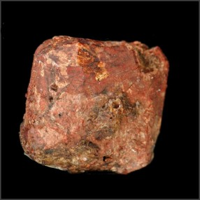

|
Frâncio |

Utilizações:
-Por causa de sua alta instabilidade e tempo de meia-vida bastante curto de 22 minutos, ele não tem uso comercial
-Pesquisas são feitas para se usar o elemento em procedimentos de diagnóstico médico
-Estudos do frâncio com laser tem aplicação científica em confirmações na área da quântica
O frâncio é feito artificialmente.
 -Radioativo
-Radioativo